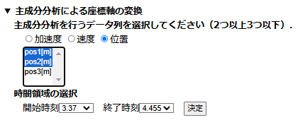
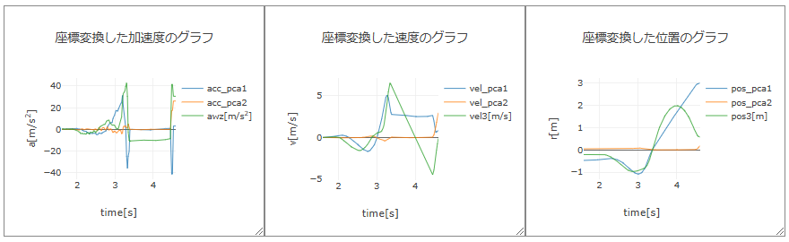

【操作方法】
■ 主成分分析による座標軸の変換
2次元または3次元のデータに対して主成分分析を行い，得られた主成分の方向に座標軸をとることによって，物体の運動を調べるのに適した座標軸に変換する．主成分分析では，多変量のデータに対してデータの分布が最も散らばっている（分散が最も大きい）方向に軸を取り，これを第1主成分の軸とする．第1主成分の軸に直交して，次に分散が大きくなる方向が第2主成分の軸となる．以下同様に，第3主成分，第4主成分，・・・の軸が定まる．
例として，下図に示す放物運動のデータについて，物体の位置の水平方向（$xy$方向）成分のデータを主成分分析し，座標軸（$x$軸と$y$軸）の変換を行う．

本アプリの画面の一番下にある「▶ 主成分分析による座標軸の変換」の行をクリックすると，主成分分析の設定欄が現れる．まず，加速度・速度・位置から主成分分析を行うデータを選択し，さらにデータの成分を2つ以上3つ以下で選択する（加速度列の選択で複数の成分を選択していない場合は1次元の運動とみなされ，「主成分分析による座標軸の変換」は表示されない）．次に，主成分分析に用いるデータの時間領域（開始時刻と終了時刻）を選択する．ここでは，放物運動している時間領域（$t=$ 3.37 s ～ 4.455 s）のデータに対し，主成分分析を行う．
設定後，「決定」ボタンを押すと，図のように主成分分析の結果が表示され，その下に主成分分析に用いたデータに対して，座標軸変換したグラフがプロットされる．固有値が大きい順に第1主成分，第2主成分となり，主成分負荷量の成分は，元の座標軸において主成分の軸の方向を表す単位ベクトルの成分を示している．座標軸変換したグラフから分かるように，放物運動している間の第2主成分の値はほとんどゼロであり，第1主成分の軸が放物運動の水平方向を指している．つまり，直線運動している位置データに対して，主成分分析により座標軸変換を行うと，その直線の向きが第1主成分の向きとなる．
座標軸変換したグラフの下にある「出力データの座標軸の変換」ボタンを押すと，加速度・速度・位置の出力データに対して，座標軸の変換を行い，あらたな座標軸でのデータが得られ，加速度・速度・位置のグラフが更新される．
